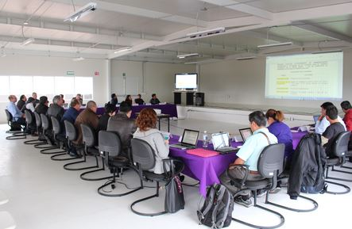

La Oficina Técnica del Consejo Académico: Tendrá a su cargo apoyar al Rector y al Secretario de Unidad en el funcionamiento y operación del Consejo Académico y sus comisiones, así como controlar y dar seguimiento a los acuerdos de este órgano colegiado.
El Consejo Académico es el máximo órgano colegiado de la Unidad, integrado por el Rector, quien funge como Presidente del mismo, los Directores de División, los Jefes de Departamento, los representantes del personal académico y de los alumnos por cada Departamento, así como los representantes del personal administrativo.
- Dictaminar y armonizar los proyectos sobre planes y programas de estudio que le propongan los Consejos Divisionales, y en su caso, someterlos a la aprobación del Colegio Académico.
- Designar a los Directores de División de las ternas que le propongan los respectivos Rectores.
- Someter al Patronato, por conducto del Rector General, el proyecto de presupuesto anual de ingresos y egresos de la unidad universitaria.
- Proponer ante el órgano correspondiente las medidas que tiendan al mejoramiento de las actividades de la unidad universitaria.
- Emitir instructivos respecto del funcionamiento interno y operativo para regular el uso de los servicios e instalaciones, tales como laboratorios, talleres, clínicas, instalaciones deportivas, prácticas de campo, transportes , equipo y maquinaria, estacionamientos, cafeterías, servicios bibliotecarios, entre otros.
- Establecer las particularidades de la organización académica de la Unidad aprobada por el Colegio Académico y acordes con la Ley Orgánica y el Reglamento Orgánico.
- Emitir y difundir las convocatorias para iniciar el proceso de designación de los Rectores de Unidad.
- Aprobar la creación o supresión de las áreas de los Departamentos, a propuesta del Consejo Divisional correspondiente.
- Conocer y emitir opinión sobre la propuesta de creación de nuevos Departamentos en la Unidad.
- Aprobar la creación, promoción, apoyo, modificación o supresión de líneas editoriales de la Unidad.

Secretaría del Consejo Académico y la Oficina Técnica
Conforme al Reglamento Orgánico, corresponde al Secretario de Unidad fungir como Secretario del Consejo Académico, al cual le competen, entre otras responsabilidades, las siguientes:
- Administrar la Oficina Técnica del Consejo Académico.
- Certificar y publicar las informaciones del órgano colegiado.
- Notificar las convocatorias y hacer llegar los documentos o archivos relativos al desahogo del orden del día.
- Pasar lista de asistencia, certificar el quórum y realizar el cómputo de votos emitidos durante las sesiones del Consejo.
- Publicar oportunamente los acuerdos adoptados en cada sesión.
- Levantar las actas correspondientes a cada sesión.
Por su parte, la Oficina Técnica del Consejo Académico de la Unidad Lerma constituye el apoyo operativo para que la Secretaría del Consejo Académico lleve a cabo las tareas que le corresponden, por lo que su principal función y compromiso institucional consiste en coadyuvar al desarrollo de las funciones del órgano colegiado con eficiencia y calidad, facilitando logística y administrativamente la coordinación de las Sesiones del Consejo y las reuniones de sus Comisiones; así como difundir la información necesaria hacia los propios integrantes del Consejo Académico y de la comunidad universitaria, cuando corresponde, de forma adecuada y oportuna.
Entre las diversas actividades operativas que realiza la Oficina Técnica de Consejo Académico se encuentran las siguientes:
- Programar y elaborar el orden del día de las Sesiones de Consejo Académico, preparar y difundir la información complementaria para cada sesión, así como gestionar la disposición de los espacios y recursos necesarios.
- Elaborar las actas de las Sesiones del Consejo Académico, de conformidad con la Legislación Universitaria.
- Programar y convocar a las reuniones de las Comisiones del Consejo Académico, asistir a estas, distribuir información, así como elaborar las minutas respectivas, proyectos de dictamen y documentos de trabajo en general.
- Elaborar convocatorias, programar las reuniones del Comité Electoral, elaborar cédulas de votación y coadyuvar en la organización y gestión de recursos para realizar las auscultaciones cuantitativas y cualitativas.
- Proporcionar información, elaborar oficios y constancias para firma del Secretario.
- Apoyar a la Rectoría de Unidad en los procesos de renovación de órganos personales, mediante la elaboración de convocatorias, registro de aspirantes, recepción de documentos y organización de auscultaciones cuantitativas y cualitativas.
- Atender solicitudes de información del Colegio Académico y otras instancias de la UAM.
- Como dato histórico se destaca que el Consejo Académico de la Unidad Lerma celebró su primer Sesión el 20 de julio de 2012.
Comisiones del Consejo Académico
A fin de atender los asuntos prioritarios de la Unidad e impulsar el trabajo al interior del Consejo Académico, éste puede integrar Comisiones de entre sus miembros, así como nombrar a los asesores técnicos necesarios para el tratamiento de un asunto específico. El órgano colegiado debe tratar que en las Comisiones se encuentren representados los sectores que lo integran.
Asimismo, el Secretario del Consejo Académico funge como coordinador de las Comisiones, las cuales rendirán su dictamen dentro del plazo otorgado por el órgano colegiado.
Por mandato expreso de la Legislación Universitaria, en la primera sesión posterior a su instalación, el Consejo Académico debe integrar una Comisión de Planes y Programas de Estudio.